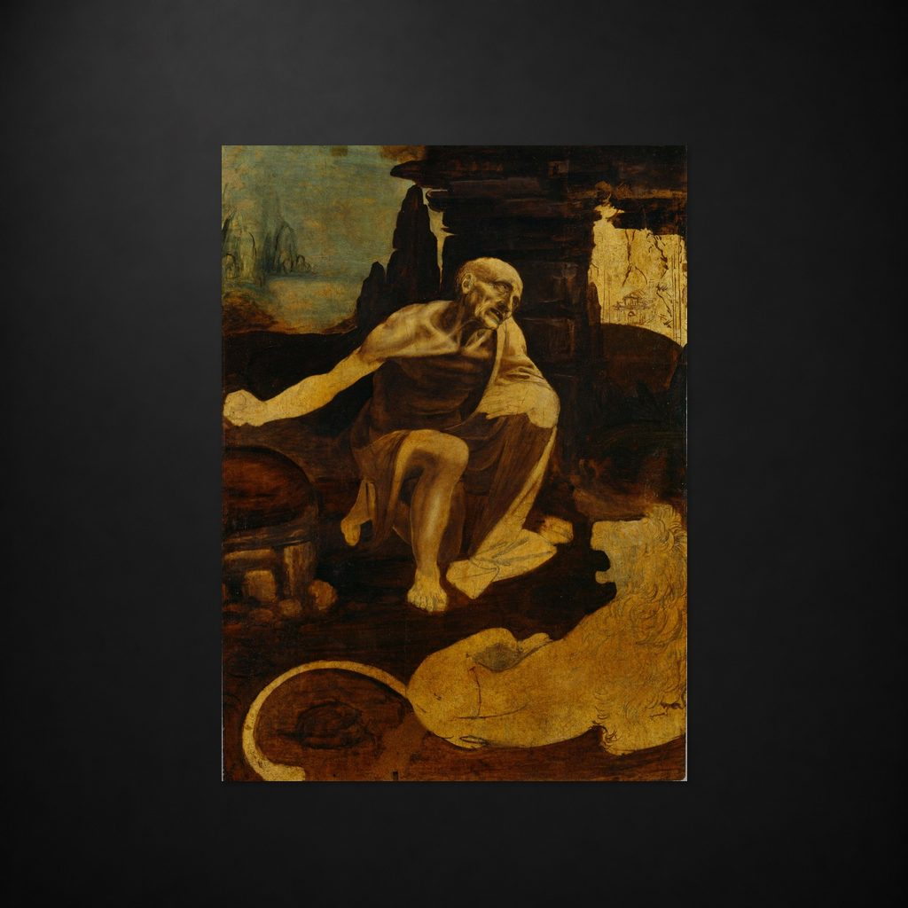

荒野中的圣杰罗姆
达·芬奇 · 约1482年
S. Girolamo
讲解节选
老人握着一块石头，瘦削的身体紧紧蜷曲，头却转向画面右边。
这是达·芬奇没有完成的《圣杰罗姆》，也叫《荒野中的圣杰罗姆》。它画在胡桃木板上，使用了油画技法。梵蒂冈博物馆把它与《三王来拜》作比较，将年代推定在约一四八二年；也有研究把开始创作的时间放在约一四八三年。
— 普通话讲稿 · Artvery
完整讲解约 3 分钟，在 Artvery App 里收听。粤语、台湾国语、内地普通话三种语音，馆内对准作品即可识别播放。
在 App Store 下载
App 免费下载，每座博物馆单独购买，一次购买永久使用。目前在香港、澳门、台湾、新加坡、马来西亚、英国、美国、加拿大、澳大利亚、新西兰、挪威、瑞士的 App Store 提供，暂未在中国内地上架。
作品信息
- 作者
- 达·芬奇
- 年代
- 约1482年
- 所在
- 梵蒂冈博物馆 · 绘画馆（Pinacoteca）
- 馆藏编号
- 40337
梵蒂冈博物馆参观攻略：必看名作和路线 · 梵蒂冈博物馆中文语音导览